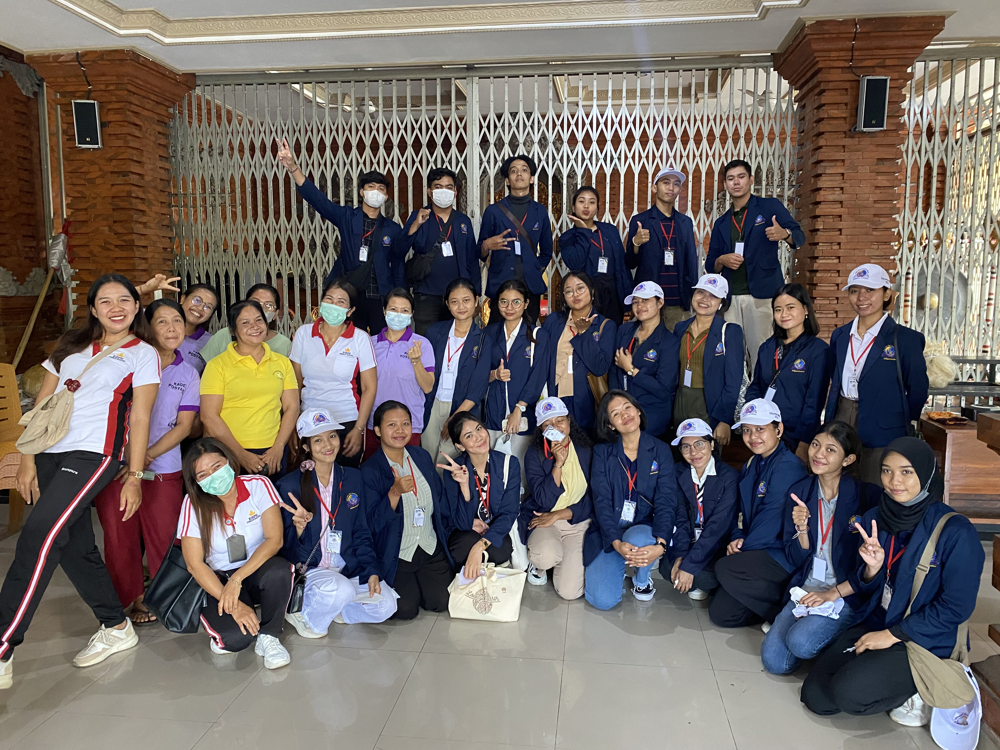

Program Balita dan Lansia yang dijalankan oleh Mahasiswa
KKN-PPM
Ke-VI Universitas Bali Internasional 2023 di Desa Mambal, Kecamatan Abiansemal,
Kabupaten Badung, memiliki fokus pada peningkatan kesehatan dan kualitas hidup Balita
(Bayi lima tahun) dan Lansia (lanjut usia).
Dalam kolaborasi dengan Posyandu di Banjar Agung Desa Mambal, program ini memberikan
perhatian khusus pada Balita. Ini meliputi edukasi tentang MPASI (Makanan Pendamping
ASI) dan pemberian multivitamin untuk memperkuat sistem kekebalan tubuh mereka. Prodi
Farmasi juga berperan dalam pemantauan pertumbuhan dan perkembangan anak-anak,
memberikan saran yang berharga kepada orang tua atau wali Balita.
...Prodi Fisioterapi memantau tumbuh
kembang anak melalui observasi yang cermat, membandingkannya dengan pencapaian
perkembangan anak yang normal. Orang tua juga berkontribusi dengan memberikan
informasi penting. Dengan demikian, program ini tidak hanya meningkatkan pemahaman
mengenai tumbuh kembang anak, tetapi juga memberikan solusi konkrit bagi anak-anak
yang memerlukan perhatian ekstra.
Prodi Psikologi mengenalkan latihan sensory bagi Balita melalui permainan
dengan agar-agar yang berisi figur hewan. Ini membantu mengembangkan indera peraba,
penglihatan, dan kognitif anak-anak. Tujuan utamanya adalah untuk memastikan bahwa
anak-anak menerima stimulus penting untuk pertumbuhan dan perkembangan optimal
mereka.
Dengan implementasi program ini, diharapkan masyarakat di Desa Mambal akan
lebih sadar akan pentingnya skrining kesehatan tumbuh kembang anak dan evaluasi
kesehatan lansia. Prodi Farmasi memberikan saran untuk memahami pentingnya gizi dan
kesehatan Balita, berpartisipasi dalam sesi edukasi, dan mengikuti saran profesional
farmasi mengenai suplemen multivitamin.
Prodi Fisioterapi menyarankan orang tua untuk memanfaatkan link yang tersedia
untuk menilai perkembangan anak, dan jika diperlukan, berkonsultasi dengan dokter
untuk tindakan lebih lanjut. Pengecekan dini merupakan langkah yang bijak untuk
mendukung perkembangan anak. Berikut informasi yang bisa dicek lebih lanjut melalui
situs resmi Kemenkes: Pantau tumbuh kembang buah hati anda, Cegah stunting maksimalkan tumbuh kembang anak,
Dampak buruk rokok pada tumbuh kembang anak.
Terakhir, Prodi Psikologi menekankan pentingnya memberikan stimulus sensory
dan motorik yang cukup kepada anak-anak untuk memastikan perkembangan mereka
mencapai potensi maksimal dan untuk mendeteksi gangguan perkembangan sejak dini.
Dengan kerjasama antara program studi ini, program Balita dan Lansia diharapkan
dapat memberikan manfaat yang besar bagi masyarakat Desa Mambal.